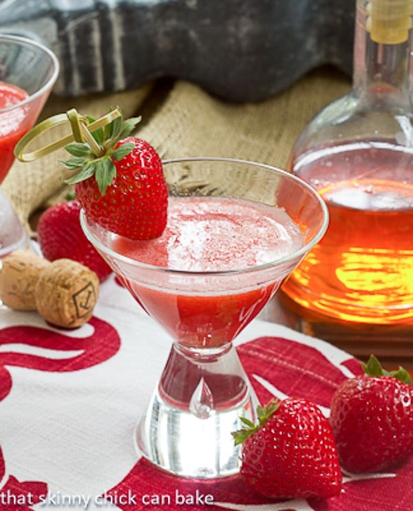

Strawberry-Bellini

Description
A nice refreshing beverage!
Ingredients
3 cups strawberries, hulled and sliced
¼ cup confectioners' sugar
1 tablespoon brandy
1 ½ cups chilled sparkling wine
3 large strawberries
Steps
Blend 3 cups strawberries, confectioners' sugar, and brandy together in a blender until smooth.
Chill in refrigerator for 10 minutes.
Divide the strawberry mixture among 3 champagne flutes; top each with about 1/2 cup sparkling wine; stir.
Garnish each glass with 1 strawberry.
Be sure to check out some of our other recipes!
Gyros
Bacon-Cheeseburgers
Front page